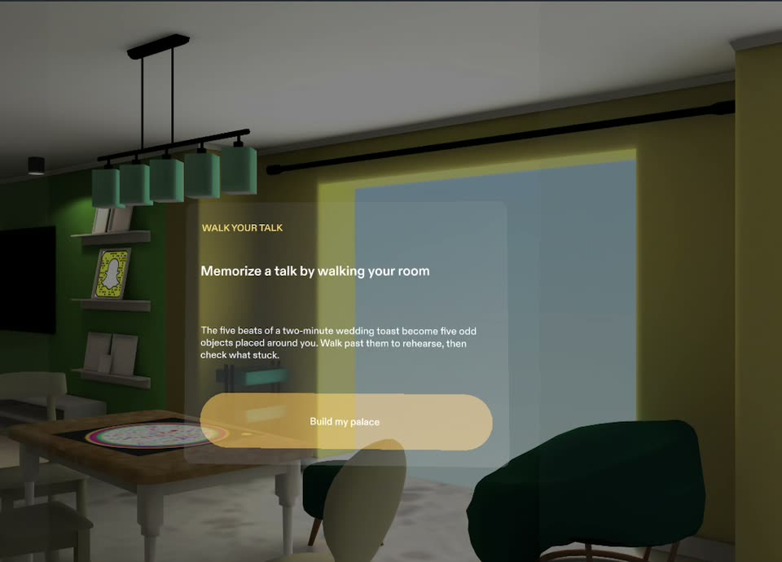

A MEMORY-PALACE LENS FOR SPECS
Memorize a talk
by walking your room.
Each beat of your talk becomes an odd object on your own furniture. Walk the route to rehearse with your hands free and eyes up, then walk it again from memory.
Try the same session rules as the Lens below. Every picture on the right is a real frame of the SPECS Lens running in Lens Studio's preview.
Try it in your browser ↓
LENS STUDIO PREVIEW · REAL FRAMETHE LENS
Watch it running in Lens Studio's preview
Build, walk, recall, debrief and practice, recorded from the SPECS Lens (2:07, captions on).
Build
Pinch each glowing spot. The beat drops onto the furniture as a vivid object, and a gold route joins them in speaking order. Only the next spot takes a pinch.
Walk
Walk up to each object. It wakes up and shows its beat just long enough to say it out loud. Out of view, a chevron and a spatial chime point the way.
Recall
The objects hide behind "?" orbs. Say the beat, pinch to check, then grade yourself honestly with two big targets beside the object.
Practice
The debrief keeps your first-pass score and builds a route with only the beats that slipped, until every beat is back.